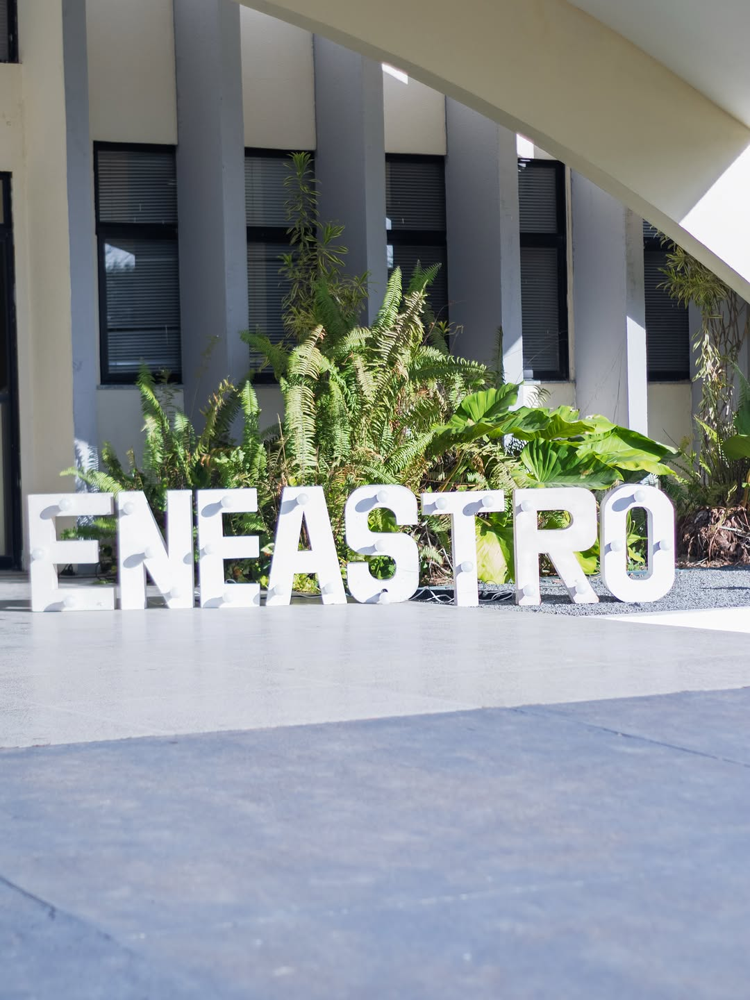
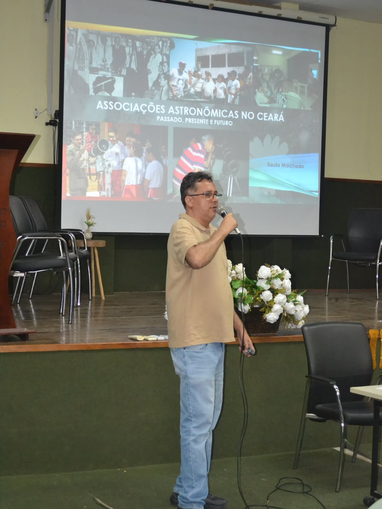
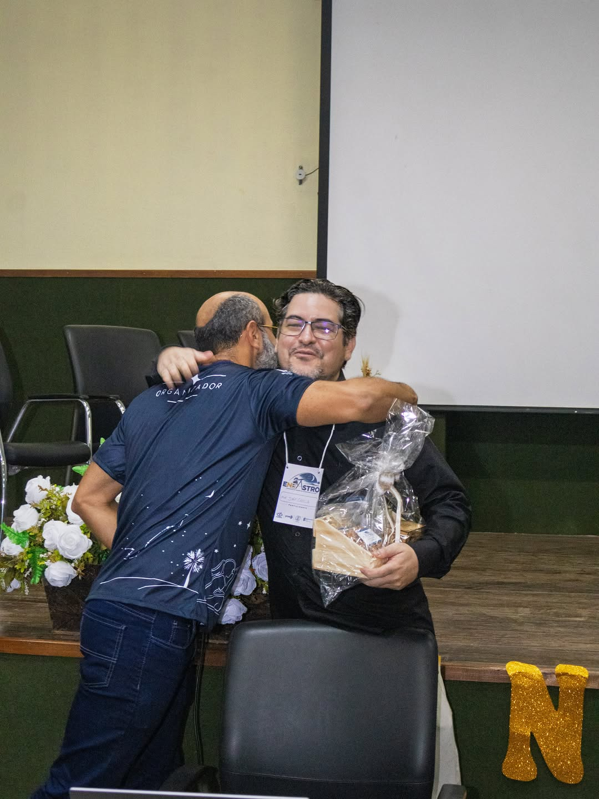
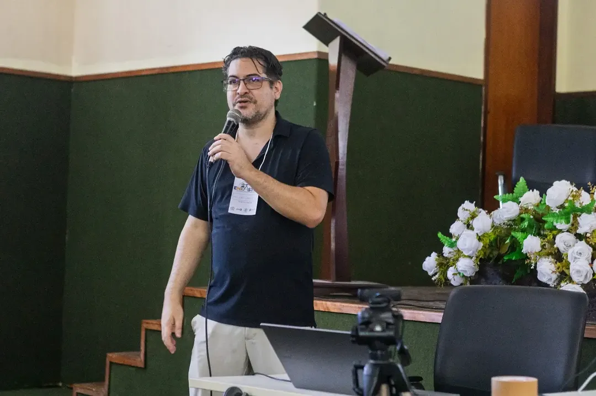
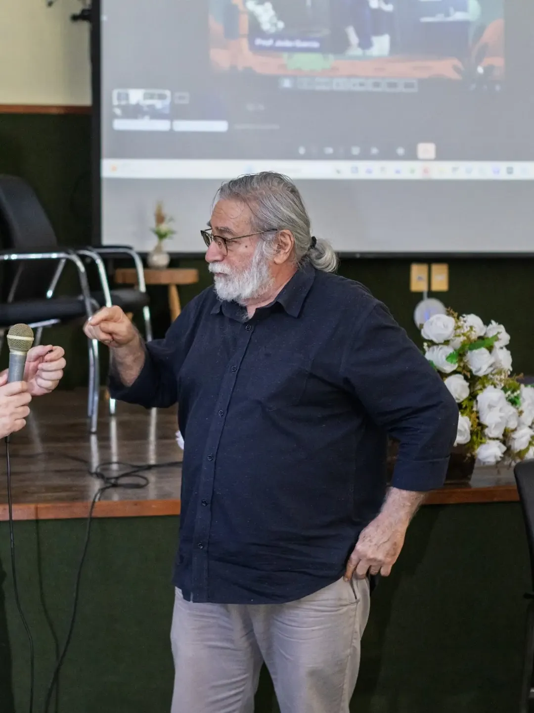
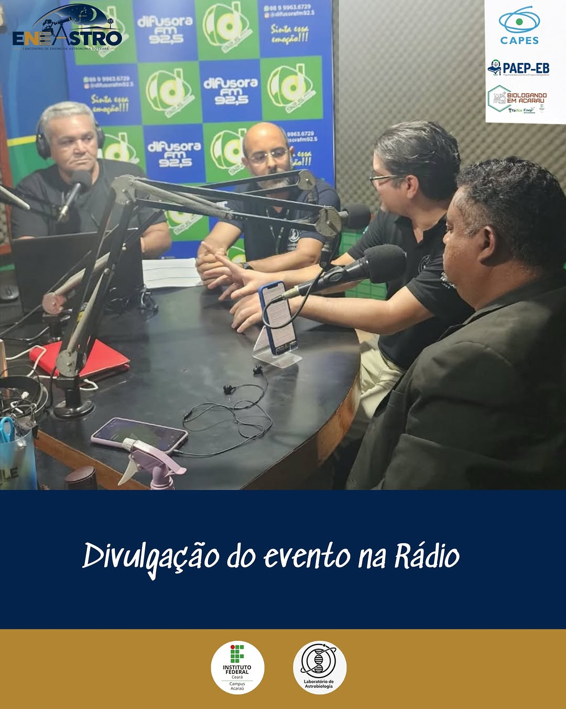
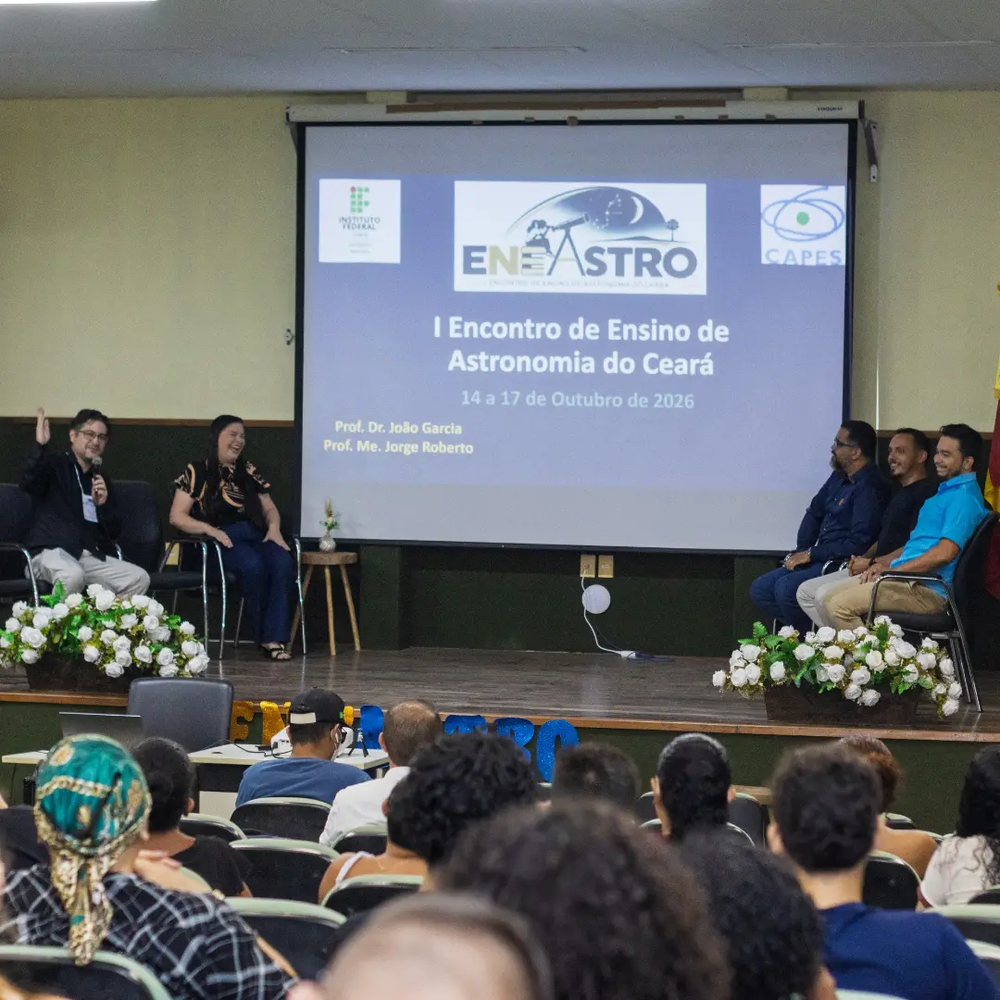
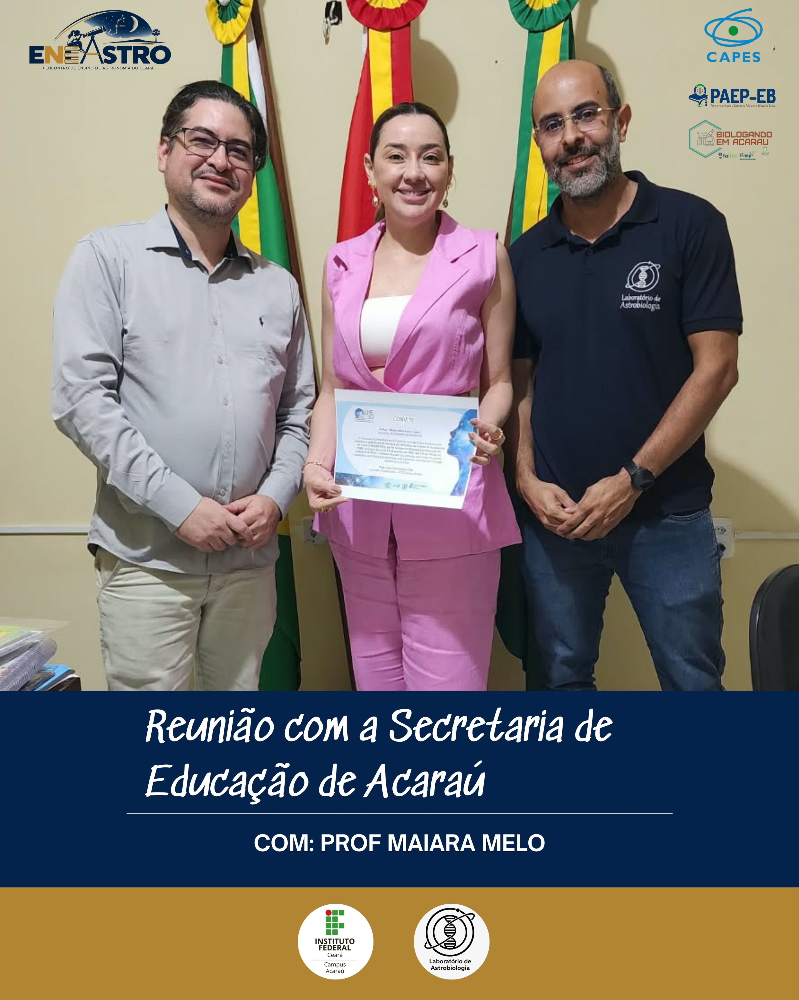

I ENEASTRO: O Marco Inaugural do Nosso Grupo Atual
O I Encontro de Ensino de Astronomia do Ceará (I ENEASTRO) nasceu como fruto direto do amadurecimento da equipe que hoje integra o Laboratório de Astrobiologia (@astrobiologiaifce) e o Clube de Astronomia (@cav.ifa) do IFCE Campus Acaraú. Sob a coordenação do Prof. Dr. João Garcia Alves Filho e do Prof. Me. Jorge Roberto Pereira da Silva, a geração atual de licenciandos em Física e Ciências Biológicas organizou um encontro histórico de quatro dias com o tema “Vida e Universo”.
Antes mesmo da abertura oficial, a comissão organizadora promoveu uma ampla mobilização social no Baixo Acaraú, incluindo reunião de articulação na Secretaria Municipal de Educação de Acaraú (junto à Prof.ª Maiara Melo) para participação das escolas da rede pública e entrevista ao vivo nos estúdios da Rádio Difusora FM 92.5.
Programação Científica, Palestrantes e Marcos Realizados
SBAstrobio e Origem da Vida no Auditório do IFCE Acaraú
Participação especial da Prof.ª Dra. Evelyn Sanchez (UFVJM / Presidente da Sociedade Brasileira de Astrobiologia — SBAstrobio) e da pesquisadora Tatiane Peters (UFRJ / Helmholtz Zentrum München), que ministrou palestra sobre “Meteoritos e Origem da Vida”, conectando astroquímica, impactos meteoríticos e evolução pré-biótica.
Palestras com Referências da Astronomia no Ceará
Conferências ministradas pelo Prof. Heliomárzio Moreira (RENOEN / IFCE — “Astronomia e Astrofotografia”), Prof. Saulo Machado Filho (GAEA / Asteroid Day — “Associações Astronômicas no Ceará: Passado, Presente e Futuro”), Prof. Emerson Ferreira de Almeida (Coordenador de Física da UVA), Prof. Nunes (IFCE Campus Cedro) e Prof. Daniel.
Oficinas Práticas, Fotometria Estelar, PIBID e Observação do Céu
Mesas e oficinas conduzidas pelos egressos e estudantes do grupo — Orlando, Isaac e Mirla (Clube Voyager / @ceucurioso / Show da Física) e Eurimar (fotometria de estrelas variáveis junto à UBA e AAVSO) —, além de sessões imersivas do Planetário ECO, mostra de trabalhos do PIBID e observação telescópica com o @cav.ifa.
Bioinformática Estrutural, Projetos CNPq e Monitoramento de Meteoros
Na sede do campus funcionam permanentemente a bancada de bioinformática herdada do LaTEB (modelagem molecular 3D, filogenia de extremófilos e algoritmos em Python para seleção de exoplanetas pelo índice ESI) e a estação automatizada de captura de meteoros vinculada à BRAMON.
Galeria do I ENEASTRO Indexada Direto do Instagram (@astrobiologiaifce & @cav.ifa)
Navegue pelas setas em cada cartão abaixo para visualizar todas as fotos publicadas em cada carrossel do evento no Instagram:

1º DIA · ABERTURA (14 FOTOS)1º Dia: Solenidade de Abertura, Planetário Móvel e PIBID
Abrir publicação no Instagram (/p/Deot9mEkdi6/) ↗
2º DIA · AUDITÓRIO (13 FOTOS)2º Dia: Conferências, SBAstrobio e Observação do Céu
Abrir publicação no Instagram (/p/Det35LsER92/) ↗
3º DIA · PALCO (7 FOTOS)3º Dia: Mesa-Redonda, Egressos & Origem da Vida
Abrir publicação no Instagram (/p/Dez3J-Mmvgl/) ↗
ASTROBIOLOGIA (12 FOTOS)Palestra de Astrobiologia com Prof. Dr. João Garcia
Abrir publicação no Instagram (/p/Deric0kHKiN/) ↗
ENCERRAMENTO (9 FOTOS)Encerramento: Importância dos Planetários (Prof. Demerval Carneiro)
Abrir publicação no Instagram (/p/DerekcxFhyo/) ↗
RÁDIO DIFUSORA (3 FOTOS)Divulgação Oficial na Rádio Difusora FM 92.5
Abrir publicação no Instagram (/p/Dee1fjgFHPL/) ↗
REGISTROS (4 FOTOS)Registros da Equipe e Participantes no I ENEASTRO
Abrir publicação no Instagram (/p/DesMh01meHP/) ↗
SECRETARIA DE EDUCAÇÃO